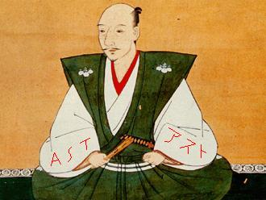

Forums galactiques > Assemblée Galactique : diplomatie officielle > Préparation des Elections.
| Cüneyt Arkin Respect diplomatique : -49  15/01 ETU 16:14 | Score : 0 Détails Mais quelle condescendance, quel mépris à l'AST...
| ||
| sayyadina Respect diplomatique : 99  15/01 ETU 16:19  | Score : 0 Détails Bon Cüneyt, si vous vouler me faire changer d'avis, si vous voulez que je reprenne mes anciennes planètes, continuez dans ce sens!!!
(Il va encore dire que je lui fait du chantage, sacré garnement va!!) | ||
| Cüneyt Arkin Respect diplomatique : -49 15/01 ETU 16:21 | Score : 0 Détails Pardon Sayyadina si vous vous sentez visé ce n'est pas le cas, mais ça fait deux posts qu'on se fait mépriser par des gens de l'AST... Je vois que vous en êtes aussi...
Il y a le meilleur et le pire dans cette coalition, comme partout vous me direz... | ||
| Arioch Nemesis Respect diplomatique : 92  15/01 ETU 16:37 | Score : 2 Détails L'avantage du provisoire, c'est que c'est comme le "à durée indeterminée"...
On déclare le gouvernement provisoire, la sujectivité fait le reste... C'est d'un pratique... Je me rappelle bien d'un AST qui racontait "il faut des elections démocratique, un gouvernement élu démocratiquement à la tête de l'assemblée", "nous soutenons tout gouvernement élu par la voix de la démocratie" et qui, à peine le gouvernement élu, devant leur echec, se sont retirés en boudant et en baraguinant avec une mauvaise fois digne d'être présenté dans les livres de records, refusant de participer à l'impôt galactique, qui faisait pourtant parti de leur promesses de campagne, refusant de participer au affaire de l'assemblée, malgré les invitations lancés, et refusant d'intervenir lorsque le tyran Imothep a commencer ces attaques sur le siège du gouvernement. Je vais donc vous dire ce qui va se passer : l'AST va faire s'embourber les choses, jusqu'à la disparition "accidentelle" de leurs opposants significatifs. Puis, elle lancera l'election. Si jamais, par malheur, elle perdait encore, elle parlera de tricherie, inofficialisera le vote, et le relancera jusqu'à ce que, lassés, les commandants finissent par l'accepter, ou bien qu'un autre tyran vienne se présenter et d'emparer d'Ultremia. | ||
| AlphonseHubert Respect diplomatique : 690  15/01 ETU 16:42 | Score : 1 Détails Nous n'avons pas été élus : nous avons donc laissé le gouvernement qui, lui, était élu, mener la Galaxie, avec le succès que l'on sait.
Vous nous reprochez peut-être d'avoir accepté notre défaite ? C'est bizarre... Et si vous lisiez le sujet "référendum", vous verriez qu'un terme a été fixé au "provisoire". | ||
| Loulou de Himmel Respect diplomatique : 15  15/01 ETU 16:43 | Score : 1 Détails Tu donnes dans la bonne aventure maintenant Arioch ? Tu penses que l'AST se donnerait tant de mal, Alphonse en particulier, pour organiser des élections qui n'auront jamais lieu?
Un peu de bon sens voyons... | ||
| Arioch Nemesis Respect diplomatique : 92 15/01 ETU 16:44 | Score : 0 Détails Quand on accepte sa défaite dans ce genre de situation, on accepte de collaborer au moins sur les points de programmes communs...
Enfin, je ne sais même pas pourquoi j'essaie de discuter... Peut être pour passer le temps, puisque nous savons tout deux que c'est la seule chose qui peut résulter d'un tentative de dialogue avec l'AST. | ||
| AlphonseHubert Respect diplomatique : 690 15/01 ETU 16:46 | Score : 1 Détails Ce point de programme n'était pas commun : nous voulions un impôt obligatoire, l'ULG en proposait un facultatif. Nous voulions un double-impôt à la fois sur les ressources et sur les revenus, l'ULG ne proposait pas cela.
Votre impôt étant facultatif, nous avions donc le choix de le payer - ou non. Nous avons exercé notre Liberté, nous avons choisi parmi les options que VOUS nous proposiez. Comment nous le reprocher ? | ||
| Loulou de Himmel Respect diplomatique : 15 15/01 ETU 16:47 | Score : 1 Détails Rappelle moi les points commun entre l'ultrémisme et l'AST que je ris un peu ?
Non, vraiment, ça ne sert à rien de discuter Arioch, tu as raison. | ||
| nobunaga2 Respect diplomatique : 6  15/01 ETU 16:49 | Score : -1 Détails Oui , c est bien,Arioch,n essaie pas de discuter..!
| ||
| yable Respect diplomatique : 250  15/01 ETU 16:54 | Score : 0 Détails Ceux qui reprochent aux autres de faire l'amalgame entre AST et commandants de l'AST font l'amalgame entre l'ULG et l'ultrémisme, c'est risible.
Le problème de l'AST lorsque l'ULG était au pouvoir, c'est qu'elle voulait les avantages du gouvernement ULG sans les inconvéniants. Enfin disons plutôt qu'elle voulait à tout prix discréditer le gouvernement en place en attendant les élections suivantes. | ||
| AlphonseHubert Respect diplomatique : 690 15/01 ETU 16:56 | Score : 1 Détails Quels avantages du gouvernement en place ?
| ||
| Thypheros Respect diplomatique : 188  15/01 ETU 16:57 | Score : 0 Détails J'allai le dire!
Leur tribunal était un avantage peut-être. | ||
| AlphonseHubert Respect diplomatique : 690 15/01 ETU 16:58 | Score : 1 Détails Le Tribunal était celui d'Ariétan, qui bénéficiait du SOUTIEN (toujours critique, mais soutien quand même) de l'AST. Lors des élections, l'ULG a d'ailleurs bien pris soin de dire qu'Ariétan n'était pas membre de l'ULG.
| ||
| Arioch Nemesis Respect diplomatique : 92 15/01 ETU 16:58 | Score : 0 Détails Point commun entre l'ultremisme et l'AST...
Facile : Mauvaise fois hors norme. Ceci est fait... Bravo Nobunaga2... Je ne vous aurais jamais cru capable d'un tel exploit... A atteind le fond, mais creuse encore... Mais bon, je ne vous en veux pas... Après tout, vous êtes plutot du genre qui comprend vite, mais à qui il faut expliquer longtemps... | ||
| yable Respect diplomatique : 250 15/01 ETU 16:58 | Score : 0 Détails redistribution, protection, culture, etc...
Je vais pas vous refaire le programme ULG, vous n'êtes bon qu'à le discréditer. edit : voila un point sur lequel je suis parfaitement d'accord mon cher Thypheros | ||
| Thypheros Respect diplomatique : 188 15/01 ETU 17:00 | Score : 0 Détails Il y a une différence entre les paroles et les actes.
| ||
| AlphonseHubert Respect diplomatique : 690 15/01 ETU 17:03 | Score : 1 Détails Quelle redistribution avez-vous opérée ? Quand l'AST a-t-elle demandé à en bénéficier ?
Qui avez-vous protégé ? Certainement pas l'AST ! Ni Newdeun, d'ailleurs... Quel programme culturel avez-vous développé ? Il ne figurait même pas dans votre profession de foi, et nous vous avons amplement critiqué pour cela ! | ||
| Cüneyt Arkin Respect diplomatique : -49 15/01 ETU 17:07 | Score : 0 Détails C'est malheureux mais j'ai l'impression qu'Arioche a raison sur le dialogue avec l'AST.
J'avais une très bonne opinion d'elle au début, on m'a parlé d'idéaux, d'être ensemble, et j'ai même quitté les ultremistes pour les rejoindre... Mais j'ai été trop surpris de voir la réaction de certains alors que je subissais les attaques de lensA. Certains d'entre eux sont de vrais personnes sympatiques, honnetes, et bons, comme Wima, Sayyadina, ou Mac Polarmais d'autres recourent à l'agressivité verbale ou armée comme lensA, Alphonse huber ou lord blody, alors que je ne suis qu'un marchand pacifiste... et s'en prennent aux victimes innocentes de leur amis sur l'assemblée parce qu'elles ont le toupet de se plaindre... je crois que l'ast est une coalition dividé en fait. Je ne peux donc pas emettre de jugement. | ||
| yable Respect diplomatique : 250 15/01 ETU 17:11 | Score : 0 Détails Mon cher AlphonseHubert, pouvez vous m'expliquer pourquoi dans la coalition gouvernement il y a un poste ministère de la culture ?
L'inconvéniant de donner accès à cette coalition et à ses archives, c'est que certains qui ne vous soutiennent pas peuvent y avoir accès... Je ne m'amuserais pas à développer plus avant, mon père était ministre à cette époque, mon avis est donc trop subjectif, je laisse le soin aux autres de vérifier par eux même... |
Forums galactiques > Assemblée Galactique : diplomatie officielle > Préparation des Elections.